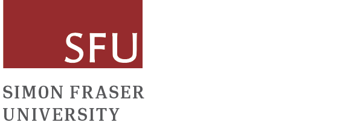

International Conference on Statistics and Data Science
June 23-25, 2025
Vancouver, BC, Canada
Vancouver, BC, Canada
| Home | Registration | Program | Directions | About Richard |
The International Conference on Statistics and Data Science will be in Vancouver, B.C., Canada from Monday, June 23 through Wednesday, June 25, 2025.
Invited session proposals are being accepted until February 15, 2025 using this form.
The objective of the conference is to bring together researchers in statistics and data science from academia, industry, and government in a stimulating setting to exchange ideas on the developments of modern statistics, machine learning, and broadly defined theory, methods, and applications in data science.
Jiguo Cao , Haolun Shi, and Liangliang Wang
The organizers are grateful for support from the following sponsors:
|  |

|

|